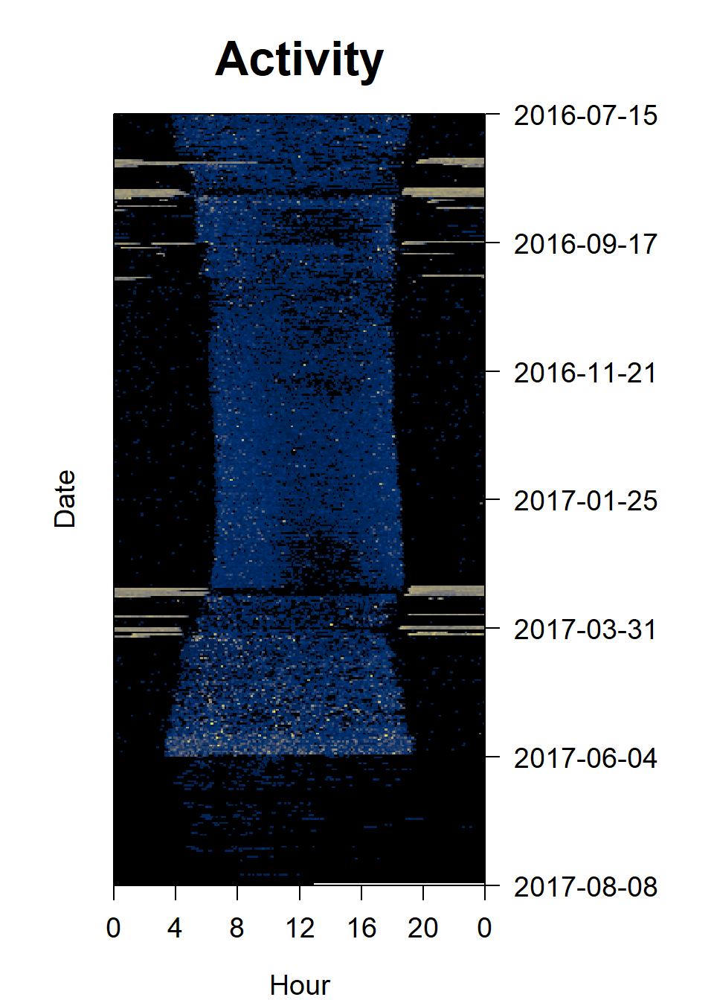
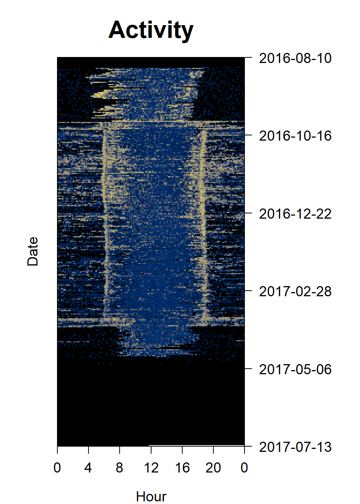
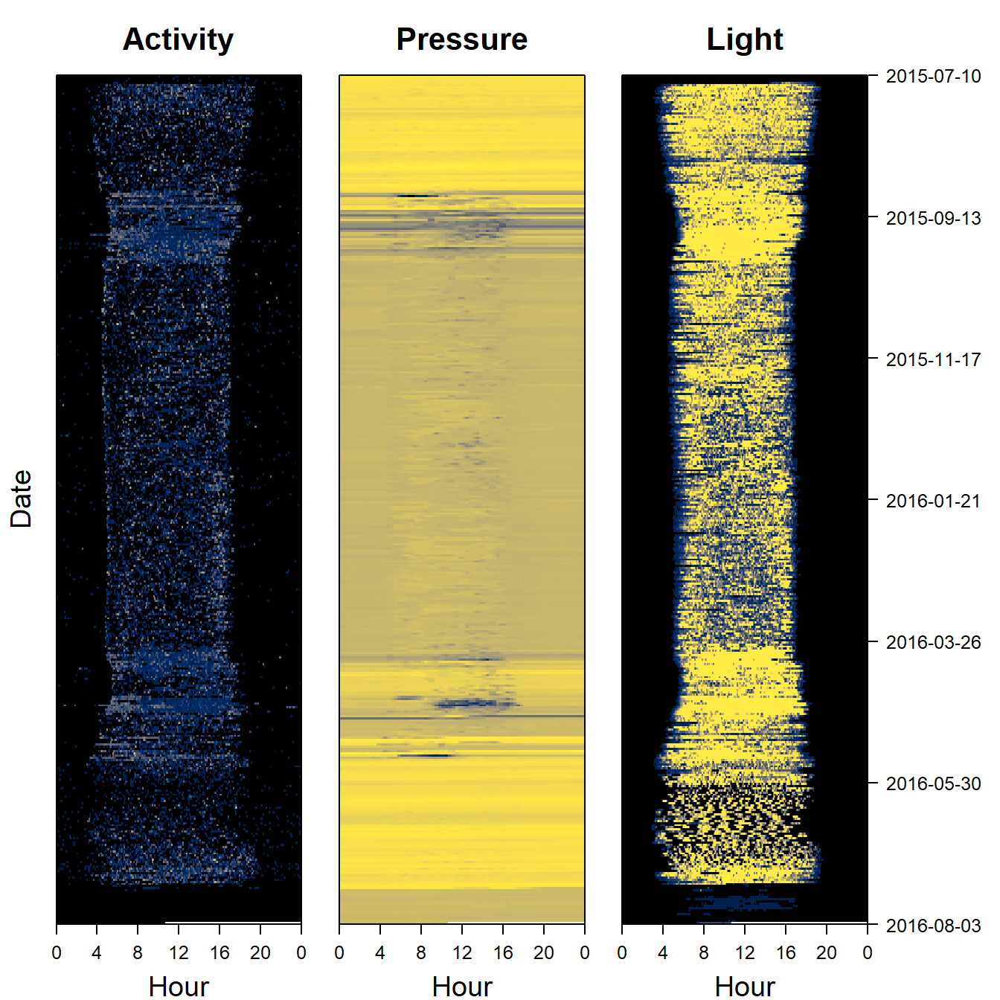
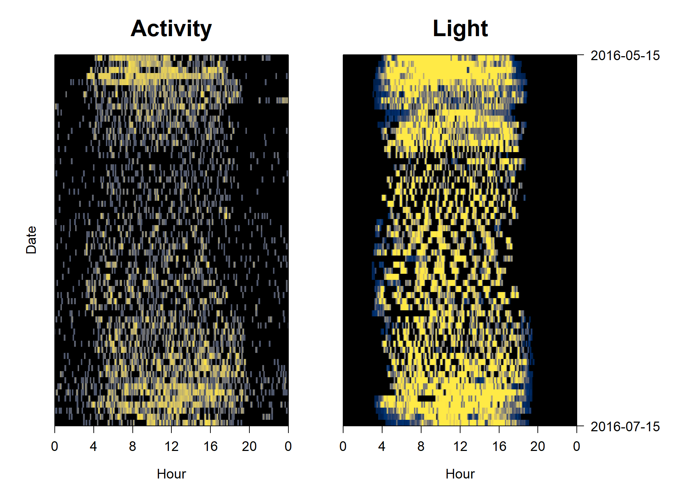

5 Common data patterns
Depending on the question, different patterns can be sought in the data to identify behaviour. Here, we outline migratory flight patterns, nesting, and foraging in small birds. However, there are many other patterns of interest which can be extracted from multisensor geolocator data including nesting success, altitudinal movements, twilight ascents, flocking behaviour, energy expenditure during flights… It is therefore important to think about the ecology of the species to determine what the patterns of interest might be relevant for answering the question that is being asked.
5.0.1 Migration
In small migratory birds, there are often three strong data signals corresponding to their yearly behaviour - breeding, migration and non-breeding residency (also termed “wintering” by some). However, sensor data patterns can vary substantially from species to species, depending on their flight strategy.
5.0.1.1 Flapping birds
Firstly, flapping birds exert high amounts of energy to maintain their wings in constant movement. This migratory strategy is most common in passerines and therefore small birds. Because of this, birds with this flapping migratory strategy tend to avoid turbulence which is highest during the day, instead preferring to fly at night. Therefore, the pattern of interest for migratory flapping birds is a high and sustained night-time activity.
In the figure below, this represents the yellow periods in september and march.
par( mfrow= c(1,1), oma=c(0,2,0,6))
par(mar = c(4,2,4,2))
sensorIMG(hoopoe$acceleration$date,
hoopoe$acceleration$act, main = "Activity",
col=c("black",viridis::cividis(90)), cex=1.2, cex.main = 2)
5.0.2 Flap-gliding birds
Secondly, flap-gliding birds remain airborne for long periods of time (often months) without resting. This migratory strategy is most common in swifts and swallows. Such birds do not show any big changes in behaviour between night and day, or between migration and non-breeding residency. However, during migration they can fly at higher altitudes than at other times of the year, rest less often with longer periods of sustained activity, display a constant pitch, and experience lower temperatures (because of the altitude) – some or all of these patterns can be used to classify such behaviour.
par( mfrow= c(1,1), oma=c(0,2,0,6))
par(mar = c(4,2,4,2))
sensorIMG(swift$acceleration$date,
swift$acceleration$act, main = "Activity",
col=c("black",viridis::cividis(90)), cex=1.2, cex.main = 2)
5.0.3 Soar-gliding birds
Finally, soar-gliding birds take advantage of thermal updrafts to remain airborne and avoid using too much energy beating their wings. This strategy is most commonly observed in raptors, cranes and storks, but also bee-eaters. Because thermal updrafts are only present during the day, such species only migrate during the day. Therefore, patterns of interest include rapid changes in daytime altitude, as well as decreases in resting time and continuous sunlight (particularly for a species which might otherwise spend time under tree canopy).
par(mfrow= c(1,3), # number of panels
oma=c(0,2,0,6), # outer margin around all panels
mar = c(4,1,4,1)) # inner margin around individual fivure
sensorIMG(bee_eater$acceleration$date, ploty=FALSE,
bee_eater$acceleration$act, main = "Activity",
col=c("black",viridis::cividis(90)), cex=1.2, cex.main = 2)
sensorIMG(bee_eater$pressure$date, plotx=TRUE, ploty=FALSE, labely=FALSE,
bee_eater$pressure$obs, main="Pressure",
col=c("black",viridis::cividis(90)), cex=1.2, cex.main = 2)
sensorIMG(bee_eater$light$date, labely=FALSE,
bee_eater$light$obs, main="Light",
col=c("black",viridis::cividis(90)), cex=1.2, cex.main = 2)
5.1 Incubation
Patterns are often easy to distinguish in cavity nesting birds. Most commonly, darkness can be used to determine when birds are entering or exiting the cavity. However, for species which are not cavity nesters, extended periods of inactivity, combined with remaining at the same altitude, can also be used to find when the bird is sitting on the nest.
par( mfrow= c(1,2), oma=c(0,2,0,6))
par(mar = c(4,2,4,2))
#Subset the data to only the breeding season
PAM_data = cutPAM(bee_eater,
start = as.POSIXct("2016-05-15","%Y-%m-%d", tz="UTC"),
end = as.POSIXct("2016-07-15","%Y-%m-%d", tz="UTC"))
sensorIMG(PAM_data$acceleration$date, ploty=FALSE,
log(PAM_data$acceleration$act+0.001), main = "Activity",
col=c("black",viridis::cividis(90)), cex=1.2, cex.main = 2)
sensorIMG(PAM_data$light$date, labely=FALSE,
PAM_data$light$obs, main="Light",
col=c("black",viridis::cividis(90)), cex=1.2, cex.main = 2)